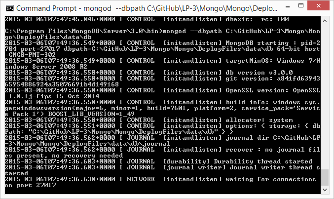

Starting Mongo
From the Command Prompt
Once installed you can then start the ‘Mongod’ service through the command prompt
To do this manually you can simply run ‘mongod.exe’ from the cmd prompt.
The default path for this is c:\Data\DB (if it doesn’t exist it won’t start.).
If like us you don’t want to use this path, you can always supply the –dbpath parameter.
mogod --dbpath c:\MongoDBPath
Its Running...! .. Is it?
When it starts, it’s pretty underwhelming and almost difficult to know if it’s failed or not...
However as long as the last thing it says is “waiting for connections on port 27017” you should be ok.
